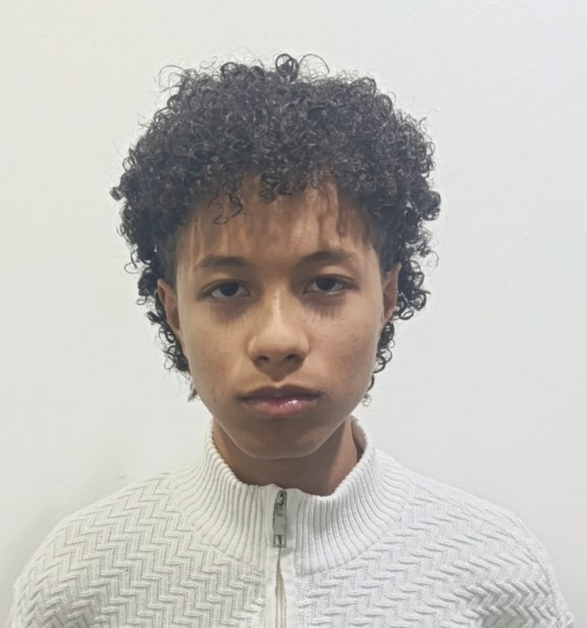
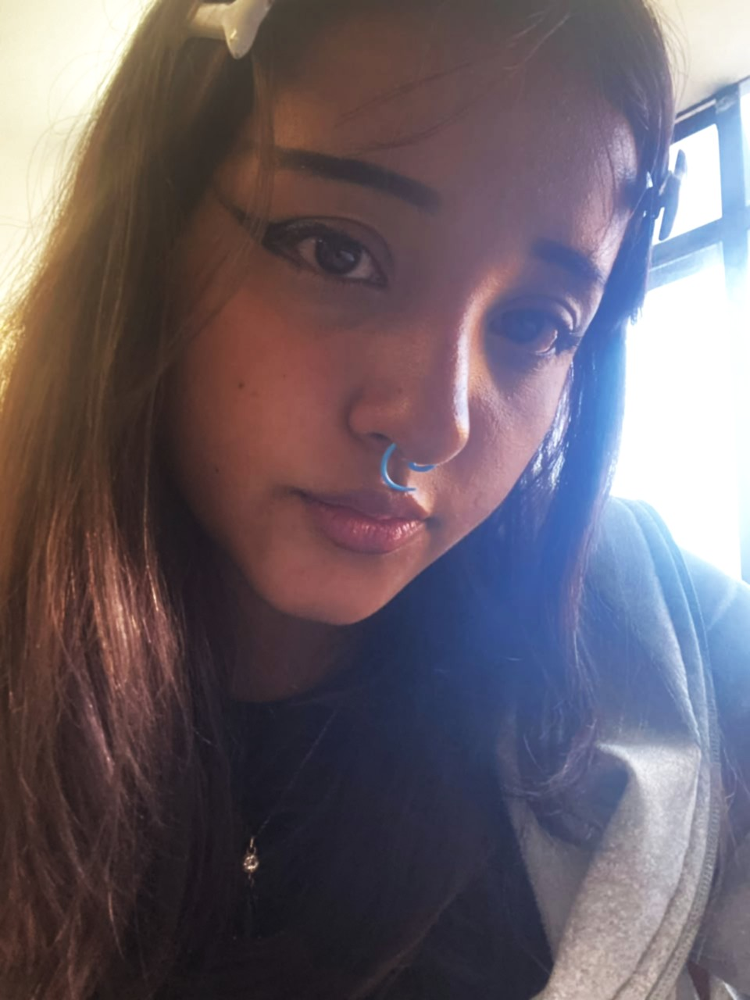

Quiénes somos
Somos un equipo con una vista moderna del mundo, nacientes por la problematica de sitios desactualizados
Qué nos mueve
Creemos en la innovación, siendo esta el eje central de nuestros trabajos, gracias a nuestras politicas de responsabilidad y trabajo en equipo nos aseguramos entregar un trabajo de alta calidad al cliente, respentando los tiempos de entrega pautados y con total honestidad de como nuestros proyectos son desarrollados.
Misión
Nuestra empresa desarrolla soluciones de software innovadoras, seguras y eficientes que ayuden a empresas y emprendedores a optimizar sus procesos, impulsar su crecimiento y adaptarse a las nuevas tecnologías, ofreciendo un servicio de calidad basado en la creatividad, la confianza y el compromiso con nuestros clientes.
Visión
Al año 2030, ser una empresa reconocida por solucionar problemas a nivel tecnológico (software) siendo innovadores, confiables y de alta calidad que impulsen el crecimiento económico y social del país.

Fernando Baena
Fundador de la empresa y administrador de desarrolo web a nivel back-end.

Helen Gonzales
Co-fundadora de Arsidev yadministrador de desarrollo web front-end.